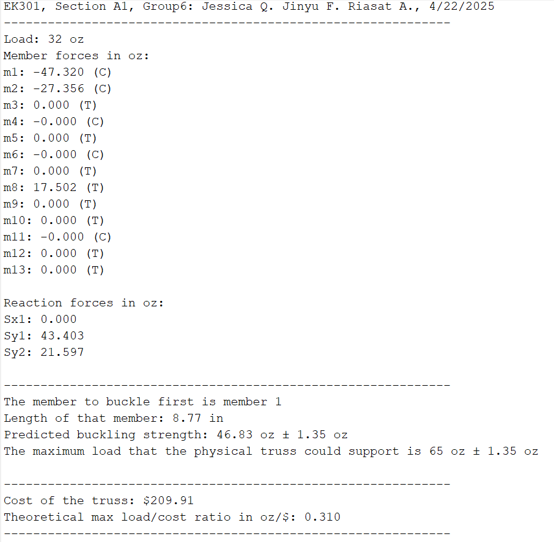
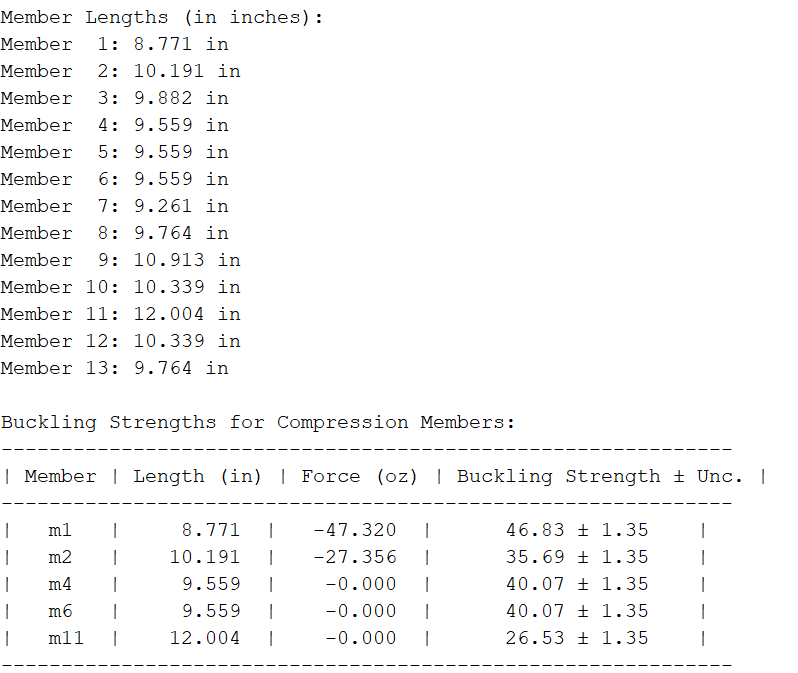

Design & Fabrication
Optimized Acrylic Truss Design

Project overview
Modeled In MATLAB, Refined For Strength, Built By Hand.
In a team of three, I designed an eight-joint acrylic Warren truss to carry about twice the required 32 oz load, sizing every member from our own MATLAB buckling model.
We chose to maximize load capacity rather than load-to-cost ratio, treating the extra margin as a safety factor, the way real structures are overbuilt for reliability. The final brief raised the roller support 1 inch above the pin, so we reworked the joint layout, recalculated every member length and angle, and kept the geometry symmetric to preserve clean load paths.
The truss was cut from acrylic strips to the nearest hundredth of an inch and assembled with fiber-reinforced tape, applied inside and outside each joint and wrapped for compression resistance.
Key Work & Outcomes
- Raised the predicted failure load from 50 oz (preliminary 7-joint design) to 65 oz ± 1.35 oz, over twice the 32 oz requirement.
- Identified Member 1 (8.77 in, 46.83 oz buckling strength) as the critical member; support reactions of 43.4 oz and 21.6 oz.
- Improved the load-to-cost ratio from 0.282 to 0.310 oz/$ at a total cost of $209.91.
- Added redundant zero-force members so no single member dictates failure.
Analysis
Finding The Member That Fails First
Our MATLAB solver steps the load up until the first compression member reaches its buckling strength.
It computes axial forces in all 13 members, flags the ones in compression, and checks each against the class buckling fit Pcrit = 2390·L−1.811. Nominal, strong, and weak cases (±1.35 oz fit error) bound the prediction, and we designed to the lower bound.
| Design | Joints | Predicted max load | Cost | Load / cost |
|---|---|---|---|---|
| Preliminary | 7 | 50 oz ± 1.35 | $177.53 | 0.282 oz/$ |
| Final | 8 | 65 oz ± 1.35 | $209.91 | 0.310 oz/$ |


Engineering ethics
Lessons From The Hartford Civic Center Collapse
Models have to be checked against how the real structure behaves.
As part of the project, our team studied the 1978 Hartford Civic Center roof collapse, where designers trusted a computer model that ignored torsional buckling and dismissed visible deflections during construction. We applied the lesson to our own truss: tape joints and hand-cut acrylic add uncertainty the model cannot see, so we recommended a safety factor of 3.0 for any real-world version of the design.
In hindsight, we would optimize for load-to-cost rather than raw capacity, and replace the tape joints, our largest source of uncertainty, with slotted rigid joints or plastic cement.
Continue exploring